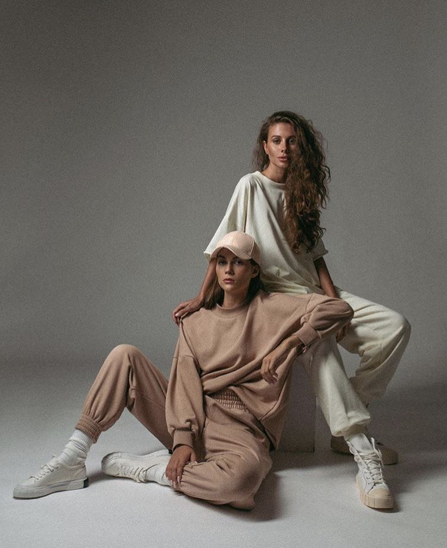

Sobre Mi

" Me encanta la fotografía desde que tengo uso de razón. Comencé haciendo mis primeras fotos con una cámara analógica de mi padre. Conforme desarrollaba mis propias habilidades y conocimientos, y tras estudiar en la universidad, mi equipo fotográfico crecía. Hoy en día me dedico a la Fotografía Profesional para marcas de moda y a la Fotografía de Producto para páginas web. En mis viajes lo que mas me gusta es fotografiar animales. "

Experiencia Profesional
Diseñador Gráfico y Fotografía Ecommerce
2015 - 2021
- Diseño de campaña promocional, foto de producto y maquetación.
- Seguimiento de produción, lanzamiento y objetivos.
Estudio Ensigna | Fotografía Profesional
2000 - 2008
Desarrollo de Fotografías de Producto para páginas web de relevancia del país.
Fotografía de Moda para marcas nuevas en su sector y marcas consolidadas. Campañas de publicidad y redes sociales.
Estudios
Fotografía Profesional | Centro de Estudios Ciudad de la Luz
2003 - 2008
Bachiller Artes | Valencia
2015 - 2017
Ciclo en Fotografía | Valencia
2017 - 2019
galeria de fotos